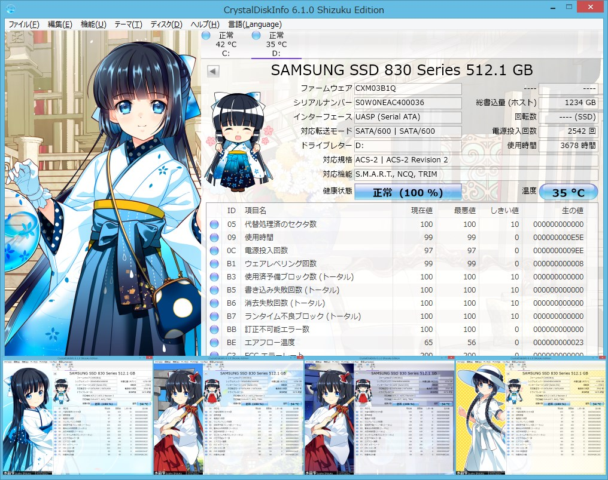
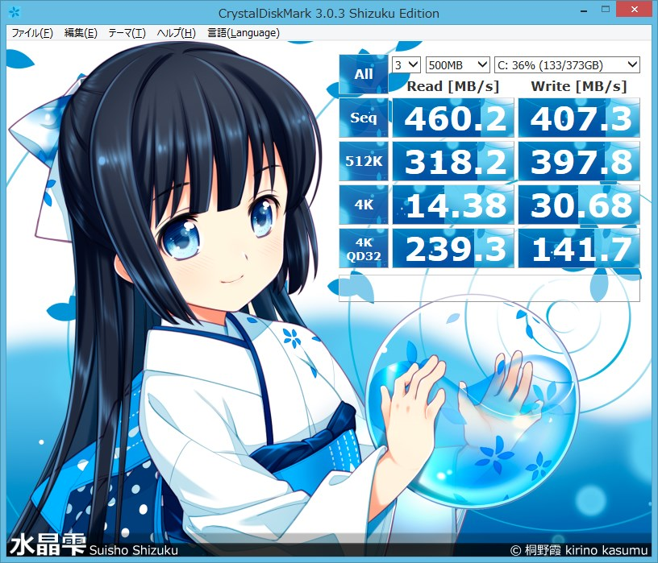

新世代ディスク情報ツール： CrystalDiskInfo 6 Shizuku Edition
和服美少女の水晶雫ちゃん(イラスト：桐野霞先生)があなたのハードディスクや SSD を見守ってくれます。ディスクの異常を検知するとかわいい声(五十嵐裕美さん)で教えてくれるのでぜひ常駐させてください。※突然しゃべりだすことがあるので職場や公共の場などでのご利用は計画的に!?
>> ダウンロードページへ

■水晶雫ちゃんの声を聴く方法：機能 > 通知機能 > 通知音設定 にて表示されるダイアログの再生ボタンをクリック!! 音声ファイルが設定されていない状態だとランダムで水晶雫ちゃんがしゃべってくれます♪（About ダイアログには隠しボイスも・・・）
主な特徴
紹介記事
- “HDD/SSDのヘルスチェックツール「CrystalDiskInfo」の最新版v6.2.0が公開 “Shizuku Edition”に新しいテーマが2種類追加 (窓の杜)
- HDD/SSDの動作状況や健康状態をチェックできるソフト「CrystalDiskInfo」がv6.1.0に 公式応援キャラクター“水晶雫”の公式サイトもお披露目 (窓の杜)
- 「アキバで人気のPC萌えキャラコンテスト」結果発表 (AKIBA PC Hotline!)
水晶雫ちゃんが「アキバで人気のPC萌えキャラコンテスト」で第2位を獲得!! - HDD/SSDのヘルスチェックソフト「CrystalDiskInfo」v6.0.0が正式公開 「Windows 8.1」「Server Core」に対応。超豪華な“Shizuku Edition”にも注目 (窓の杜)
- ストレージの状態を監視する「CrystalDiskInfo」がWindows 8.1に対応 (マイナビニュース)
- “DevSleep”の検出に対応した「CrystalDiskInfo 6」のベータ版が公開「Windows 8.1」「Server Core」に対応。“Shizuku Edition”も豪華にリニューアル (窓の杜)
- HDD/SSDのヘルスチェックソフト「CrystalDiskInfo」v5.5.0が公開 (窓の杜)
- ベータ版ながら64bit版が用意された「CrystalDiskInfo」v5.3.0が公開 (窓の杜)
- UASPに正式対応した「CrystalDiskInfo」v5.2.0が公開 (窓の杜)
- Plextor製のSSDに対応した「CrystalDiskInfo」v5.1.0が公開 (窓の杜)
- 五十嵐裕美の声でしゃべる「CrystalDiskInfo」の清楚系美少女キャラバージョン (窓の杜)
- 和服美少女がHDDやSSDの異常を検知するとかわいい声で教えてくれる「CrystalDiskInfo 5 Shizuku Edition」 (GIGAZINE)
新世代ディスクベンチマーク： CrystalDiskMark 3 Shizuku Edition
和服美少女の水晶雫ちゃん(イラスト：桐野霞さん)が HDD や SSD、USB メモリなどの速度を測定してくれます。
>> ダウンロードページへ
